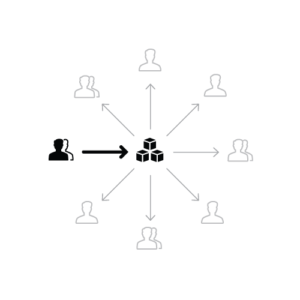

Our UX design system series continues with UX design team planning! Did you know companies with successful UX design systems cite dedicated and versatile teams as critical components to their success? According to a 2019 Sparkbox survey of in-house UX design system teams, two of the three factors that led to their success with UX design systems were having a dedicated maintenance team and developer added to the workflow.
We are sharing valuable information; so you learn about the benefits of building a UX design system, along with ways to get started. If you haven’t already, check out our previous post, ‘UX Design Systems Drive Conversion.’ It’s a good place to start if you want an introduction to the topic.
Build and sustain a UX design system with the right people to bring the concept to a substance. Here, we’ve outlined a few team models that can help you best structure your own.
4 Types of UX Design Teams
Two incredible UX design system experts to help put things in perspective are Nathan Curtis and Jina Anne. Both have contributed to some really helpful models for putting together a team of people to manage systems of all sizes. In total, they are:
- Solitary
- Centralized
- Federated
- Cyclical
Curtis first stoked the conversation about UX design system teams in his post, “Team Models For Scaling A Design System” on Medium. There, he clearly presented three team types (solitary, centralized, federated) companies can use to build out their design system. Anne extended the scope of these models with the addition of a Cyclical team to help meet the needs of larger enterprises.
Let’s understand the differences between these UX design system teams and how they might fit into your plan.
Party of One: The Solitary Team

The first model, solitary, or what Curtis calls the “overlord” excludes the actual ‘team’ part of the model. Just as it sounds, the overlord is a one-person show that dictates how the design system will evolve. The overlord unilaterally decides on the process, components, development, and design. While this sets the stage for the process to be predictable and controlled, it also limits the system’s capabilities.
Ultimately, the solitary model tends to be pretty rigid. It’s not flexible enough to provide structure or guidelines for new brands and products. Since many of today’s brands need to span various applications and platforms to meet their customers’ needs; it’s likely this model represents a pretty outdated approach.
Centralized UX Design Team
A centralized team benefits from the time and expertise of a dedicated UX design team of designers and developers to make and disseminate information about the system to everyone. This is great when you need to maintain focus on your ultimate goal. The core team works objectively to put the process together. They have a little affiliation to a particular component or process. The core team’s objectivity can work against them in some ways too. Their general knowledge makes them unaware of real-world applications privy to developers, user experience experts, marketers, etc.
Though there is a greater representation of the components that need to go into the UX design system, there is less feedback from other players on how well the design system works for them. Your background players (department heads, managers, specialists) can have exclusive, first-hand knowledge on what components are necessary to serve a particular objective. For example, if your time to market is more important than unit price than your components will vary accordingly—and so will the cost.
Consequently, the centralized team can’t understand the limits and challenges of product designers and have little influence to negotiate more efficient product and system objectives.
Federated Team
Now we come to Curtis’ third team model: federated teams. The federated team model helps resolve a lot of the setbacks encountered with solitary and centralized team models. Federate means to form a single centralized unit within which each organization keeps some internal autonomy. So in the case of a federated team, a diverse group of decision-makers and a representative, along with a sanctioned subset of designers and leaders collaborate on the system within a specific timeline. All decisions are made collectively.
A federated UX design system team makes everyone’s needs part of the planning process. This flexibility helps the system scale to any size and any direction the company wants to take it in. And since so many people see the value in it; They become natural champions of it too.
The number of players from this team type can make your project veer off track though. Like when off-the-cuff strategy sessions between team members lack documentation. That makes it hard to track development decisions. Or when only a few people get a say in a final development decision. Quick decisions rule—especially when your project lives in an environment that is fast, and constantly evolving to the needs of so many.
But Wait, There’s More
Designer and Design Systems Expert Jina Anne outlined her own team model, used with her peers at Salesforce. In her article, she shares how Salesforce uses a combination of both centralized and federated team models to build their own UX design system.
In an enterprise organization like ours, a centralized design systems team is not enough on its own; with this many key players involved and the large amount of ground we have to cover, we need an approach that is more sustainable.
Enter the cyclical team type.
Cyclical Teams
With code reusability, consistency and increased design and development efficiency listed as the top three motivators to establishing a design system, this team model has a definite place in the design system process.
The cyclical team model adds an extra subset of contributors who inform each other’s work throughout the process. An “ecosystem” of app developers and partners, streamlines bugs and updates to the process –in real-time. So as the design system informs the product design; the product design informs the design system. The two feed each other to optimum efficiency.
What UX design team works best?
With the right UX design team in place, you’ll save a lot of time and money securing your company’s long-term success. At Isadora Agency, we dedicate ourselves to changing the way brands connect with audiences in the digital world. We can help you develop an effective UX design system, made from scratch and customized to fit your brand’s needs—so you can empower your brand.
Has your company used a different team model? Feel free to contact us directly and share. We love hearing from you!